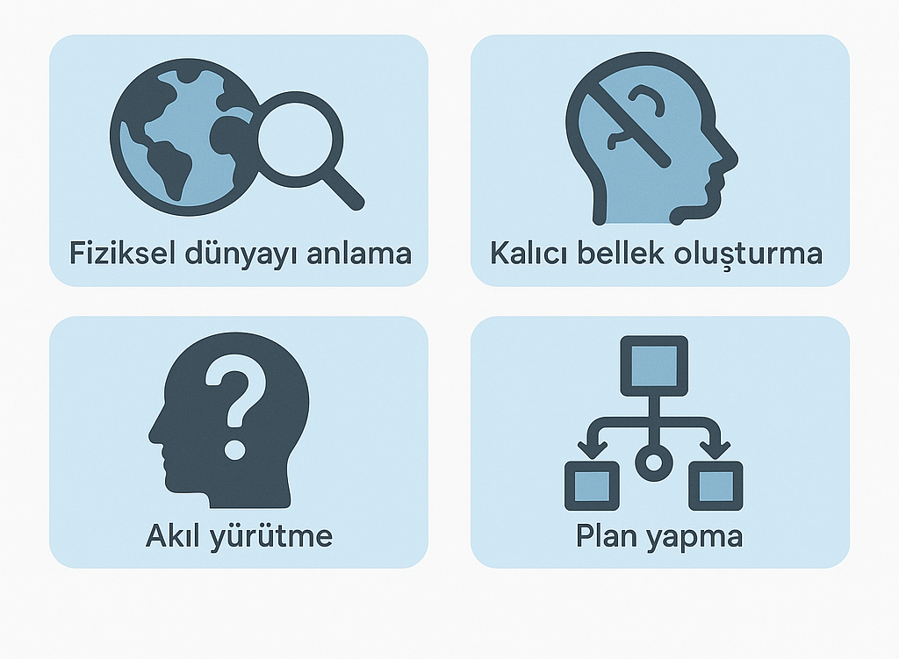

Sesli Dinle
İşte bu noktada sahneye çıkan önemli bir isim var: Yann LeCun. Yapay zekânın öncülerinden biri olan LeCun, NVIDIA GTC 2025 etkinliğinde yaptığı açıklamada çarpıcı bir görüş dile getirdi: “Artık LLM’lerle ilgilenmiyorum.” Bu iddialı ifade, aslında çok daha derin bir yaklaşımın habercisiydi. LeCun, yapay zekânın geleceğinin farklı bir yönde ilerlemesi gerektiğini savunuyor ve bu yolculukta LLM’lerin sınırlı bir rolü olduğunu belirtiyor.
YouTube Video Link: Buradan izleyebilirsiniz.
LLM’ler Neden Yetersiz?
LeCun’a göre LLM’ler, çoğunlukla metin tabanlı veriyle eğitilen, bir sonraki kelimeyi tahmin eden sistemlerdir. Bu sistemler, ürünlerde küçük iyileştirmeler yapmaya elverişli olabilir ancak gerçek dünya bilgisiyle derinlemesine etkileşim kuramazlar. Çünkü kelimelerle sınırlı bir temsil biçimi, fiziksel dünya gibi karmaşık ve sürekli değişen bir ortamı anlamak için yeterli değildir.
Dahası, LLM’ler dört temel alanda yetersiz kalıyor:

LeCun, bu alanların yapay zekânın geleceği için kritik olduğunu ve LLM mimarilerinin bu ihtiyaçlara cevap veremediğini vurguluyor.
Dünya Modelleri ve Yeni Yönelimler
LeCun’un önerdiği yaklaşımın temelinde “dünya modeli” fikri yatıyor. Bu kavram, yapay zekânın çevresini tıpkı bir insan gibi “içsel bir modelle” anlayabilmesini ifade ediyor. Örneğin, bir nesneyi yukarıdan ittirdiğinizde devrileceğini ya da aşağı kısmından ittiğinizde kayacağını bilmek, insanların doğrudan gözlemle kazandığı bir yetidir. LeCun, yapay zekânın da benzer şekilde çevresini anlaması gerektiğini söylüyor.
Bunu başarmak için önerdiği çözüm ise: JEPA (Joint Embedding Predictive Architecture) (Ortak Gömülü Öngörüsel Mimari).
JEPA Mimarisi: Yeni Nesil Zeka
JEPA, klasik LLM’lerin aksine, üretici olmayan (non-generative) ve soyut temsil tahmini yapan bir mimaridir. LeCun’un açıklamalarına göre, JEPA modeli doğrudan piksel tahmini yapmaz. Onun yerine, videolarda ya da verilerde gizlenmiş bölümleri soyut bir temsil uzayında tahmin eder. Bu da modeli daha verimli, daha anlamlı ve gerçek dünya bağlamıyla daha uyumlu hale getirir.
Soyut Temsil Öğrenimi
JEPA, geleneksel modellerin yaptığı gibi girdiyi olduğu gibi yeniden üretmeye çalışmak yerine; girdinin soyut özelliklerini temsili bir uzayda öğrenmeye ve bu uzayda anlamlı ilişkiler kurarak çıkarımlar yapmaya odaklanır. Bu da, sistemi daha verimli, daha esnek ve insan kavrayışıyla daha uyumlu hâle getirir; çünkü insanlar da çevrelerini piksel düzeyinde değil, kavramsal düzeyde algılar ve yorumlar.
Maskeleme ile Öngörüsel Öğrenme
Modelin eğitimi sırasında, video veya veri akışının belirli bölümleri kasıtlı olarak maskelenir; ardından JEPA, eksik kalan parçaları, ham görsellerle değil, temsil uzayındaki soyut özelliklerle tamamlamaya çalışır. Bu strateji sayesinde, model yalnızca verinin “görünüşünü” değil, altında yatan “anlamını” da kavrayabilir; örneğin, bir videonun belirli bir karesi eksildiğinde, JEPA bu karede ne olabileceğini görsel sadakatle değil, bağlamsal bütünlükle tahmin eder.
Dünya Modeli Yeteneği
JEPA, doğadan alınmış video verileri üzerinde eğitilerek, tıpkı insanlarda olduğu gibi bir dünya modeli geliştirir; bu model, nesnelerin hareketlerine ilişkin sezgisel fizik kurallarını içselleştirir. Örneğin; bir nesnenin havada süzülüp süzülemeyeceği, kaybolup kaybolmaması gerektiği veya şeklinin doğal olmayan biçimde değişip değişmediği gibi olayların fiziki doğruluğunu analiz edebilir; bu da, yapay zekânın yalnızca görsel değil, mantıksal tutarlılıkla da olayları değerlendirebilmesini sağlar.
Az Veriyle Verimli Öğrenme
JEPA, LLM’lerin ihtiyaç duyduğu devasa miktarda veriyle değil;tıpkı çocukların birkaç örnekle kavram öğrenmesi gibi, az sayıda örnekle etkili öğrenme gerçekleştirebilir. Bu özellik, hem veri kaynaklarının sınırlı olduğu durumlar için avantaj sağlar hem de eğitimi daha verimli ve sürdürülebilir hâle getirir.Meta’nın geliştirdiği bu mimari, insan öğrenmesine oldukça benzer şekilde çalışır.
Transformer Yerine Neden JEPA?
| Özellik | Transformer (LLM, VideoGen) | JEPA |
|---|---|---|
| Öğrenme Türü | Token/Piksel Tahmini | Temsil Üzerinden Tahmin |
| Verimlilik | Yüksek işlem gücü, çok veri | Daha az veri ile etkili |
| Gerçeklik Bağlantısı | Zayıf, metin tabanlı | Güçlü, video ve fiziksel bağlam |
| Akıl Yürütme | Söz dizimi temelli | Kavramsal ve açık |
Sistem 1 ve Sistem 2 Düşünme Modelleri
LeCun, yapay zekâda “düşünme” kavramına da önemli bir boyut ekliyor: Sistem 1 ve Sistem 2 düşünme modelleri. Psikolojide yer alan bu yaklaşım, insanların iki tür düşünme biçimi olduğunu söyler:
Sistem 1: Hızlı, sezgisel ve otomatik düşünmedir. (Örnek: Deneyimli bir sürücünün araç kullanması)
Sistem 2: Yavaş, mantıklı ve planlı düşünmedir. (Örnek: Satrançta strateji kurmak)
LLM’ler, genellikle Sistem 1 tipi davranışlar sergiler. Ancak LeCun’a göre gerçek AGI’ye ulaşmak için Sistem 2 düşünce biçimini taklit eden mimarilere ihtiyaç vardır. JEPA mimarisi, bu tür “akıl yürütme” süreçlerine daha uygun bir zemin sunar.
Sadece Metinle AGI Mümkün mü?
LeCun, metinle eğitilen sistemlerin veri sınırlarını da gündeme getiriyor. Şu anda LLM’ler yaklaşık 30 trilyon token ile eğitiliyor. Bu miktarda metni okumak bir insan için 400 bin yıl sürerdi. Ancak bir çocuk, sadece 4 yaşına kadar olan süreçte, görsel yollarla benzer büyüklükte bir veri alıyor. Bu, görsel ve deneyimsel öğrenmenin ne kadar önemli olduğunu gösteriyor.
Sonuç: AGI’ye Giden Yol Farklı
Yann LeCun’un bu açıklamaları, yapay zekâda yeni bir çağın başlangıcına işaret ediyor olabilir. Büyük dil modelleri her ne kadar şu an için etkileyici uygulamalar sunsa da, gerçek anlamda genel yapay zekâya sahip sistemler;, fiziksel dünyayı anlayan, plan yapabilen ve soyut düşünebilen mimarilerle mümkün olacak.
JEPA gibi yaklaşımlar, yapay zekânın sadece veriyi işleyen değil, dünyayı anlayan bir varlığa dönüşmesini sağlayabilir. Belki de gelecekteki AGI sistemleri, LLM’lerin bir uzantısı değil; onlardan tamamen farklı, çok daha derin ve esnek yapılar olacak.